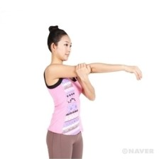
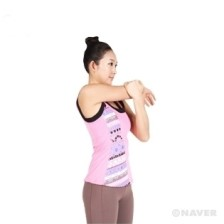

팔꿈치 잡고 당기기!
- 
1. 오른쪽 팔을 몸 가운데에 위치시키고 왼손으로 오른쪽 팔꿈치를 지지하도록 한다.
- 
2. 왼손으로 오른쪽 팔꿈치를 어깨와 등의 상부에 신전감(늘여서 펴지는 느낌)이 느껴질 때까지 당기도록 한다.반대쪽도 동일하게 수행한다.
앉아서 할 수 있는 간단한 스트레칭 방법을 모아놓은 페이지입니다.
오래 앉아 있거나 장시간 사무 작업을 하는 경우, 앉은 자세를 유지하기 위한 근육(예를 들면 척추기립근)이나 팔, 어깨 근육에 피로가 쌓이게 된다. 피로의 누적은 자세의 변화와 근육통을 동반하는 근골격계 질환을 유발하기 때문에 매일 시간이 날 때마다 스트레칭을 통하여 근육의 피로를 풀어주는 것이 좋다. 특히 의자에 앉은 채로 스트레칭을 실시하는 동작들은 별도의 공간이 필요하지 않으며, 많은 시간을 투자하지 않고서도 운동효과를 얻을 수 있다.
1. 오른쪽 팔을 몸 가운데에 위치시키고 왼손으로 오른쪽 팔꿈치를 지지하도록 한다.
2. 왼손으로 오른쪽 팔꿈치를 어깨와 등의 상부에 신전감(늘여서 펴지는 느낌)이 느껴질 때까지 당기도록 한다.반대쪽도 동일하게 수행한다.